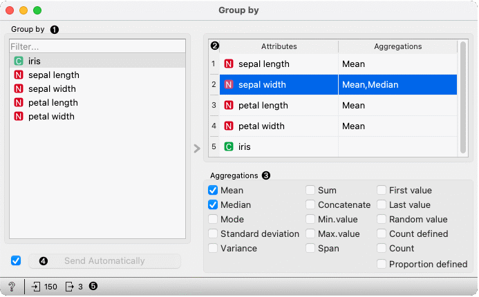
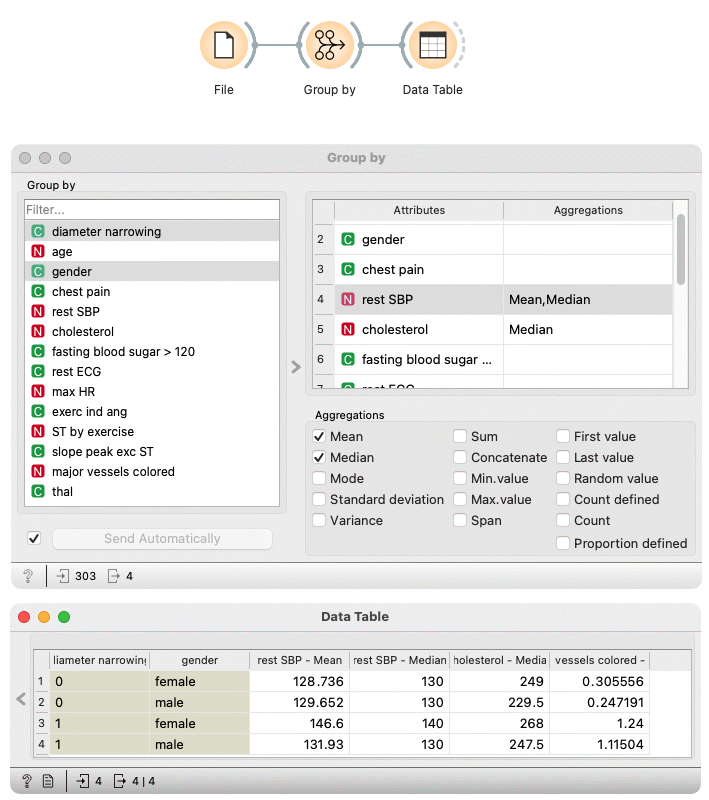

Group by
Groups data by selected variables and aggregate columns with selected aggregations.
Inputs
- Data: input data table
Outputs
- Data: aggregated data
Group By widget first identifies groups based on selected variables in the Group by list. Groups are defined by all distinct combinations of values in selected variables.
In the second step, the widget computes aggregations defined in the table on the right side of the widget for each group.

- Select variables that define groups
- View variables and their aggregations. To change aggregation for one or more variables, select them in the table.
- Change aggregations for variables selected in the view above.
- When the Send automatically box is ticked, all changes will be automatically communicated to other widgets.
- Get documentation, observe a number of items on input or output
Examples
We first load heart_disease dataset in the File widget. In the Group By widget, we set variables that define groups – diameter narrowing and gender. Each group includes items (rows) that belong to one combination of both variables.
In the table on the right-hand side of the widget, we set that we want to compute mean and median for values of rest SBP variable in each group, median for values of cholesterol variable, and mean for major vessels colored.
In the Data Table widget, we can see that both females and males have lower average values for rest SBP when diameter narrowing is 0. The difference is greater for females. The median of rest SBP is different only for females, while for males is the same.
You can also observe differences between median cholesterol level and mean value of major vessel colored between groups.
